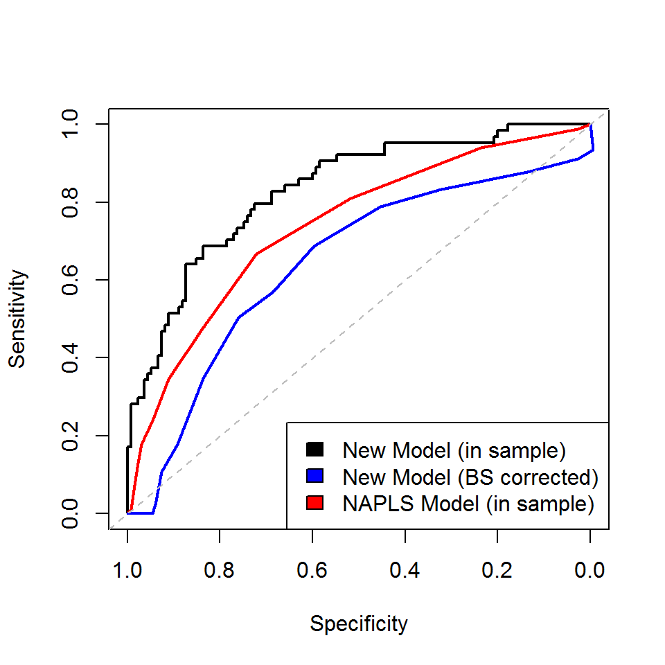

Prediction Model of Psychosis Conversion Data
- We used logistic regression with main effects only for each covariate and the outcome is conversion to psychosis.
- Subscales were included assuming a linear relationship with the logit.
- A lasso penalized fitting procedure was used to perform variable selection and estimation of the model. 5-fold cross validation (folds constructed to reflect the ~30% case rate in the sample) was used to determine the penalization parameter. This was carried out using functions from the R package glmnet.
- Validation of the model is based on bootstrapping the performacne measures (AUC, Breir Score) - using procedure outlined in Harrell 1996 Stat in Medicine Vol 15 361 - 387 (Tutorial in Biostatistics: Multivariate Prog. Models: Issues…)
Model Coefficients
- Tables show
- Beta = estimated coefficient for corresponding predictor (note that predictors are NOT standardized)
- Std_Beta = estimated coefficient for corresponding predictor when predictor is standardized (table is ordered by increasing magnitude of this Std_Beta)
- Prop_Sel_BS = proportion of times that the predictor was selected to remain in the model using the bootstrapping procedure
Selected Variables
Beta S td_Beta P rop_Sel_BS P4v -0.25 -0.36 0.99 P1 0.25 0.26 0.90 Idea_Sev_Base 0.51 0.23 0.95 P5 0.16 0.21 0.90 G2 -0.14 -0.21 0.95 race_bin..c.is.0..non.c.is.1 0.38 0.19 0.92 N1 0.12 0.19 0.90 Behav_Sev_Base 0.62 0.15 0.90 GAF -0.02 -0.14 0.86 G3 0.04 0.07 0.73 D3 0.02 0.03 0.69 N5 0.02 0.02 0.66 P1PD 0.02 0.02 0.73 SI_Base 0.02 0.00 0.67 P1NP 0.00 0.00 0.63 P1SNG 0.00 0.00 0.55 P1OB 0.00 0.00 0.59 Un-Selected Variables
B eta S td_Beta P rop_Sel_BS Trauma_Sexual 0 0 1 GFS..Social 0 0 1 X1..no.is.0..yes.is.1 0 0 1 Female 0 0 1 P2 0 0 1 famhx1..0.no..1.yes 0 0 1 Age 0 0 1 N3 0 0 1 P1FR 0 0 1 SB_Base 0 0 1 G1 0 0 1 Trauma_NonSexual 0 0 1 GFS..Role 0 0 1 D4 0 0 1 D1 0 0 1 G4 0 0 1 P3 0 0 1 N2 0 0 1 schizotypal..scz.is.1..non.is.0 0 0 1 N6 0 0 1 N4 0 0 0 D2 0 0 0 P4a 0 0 0 P4 0 0 0
In Sample and Optimism Adjusted Performance
# In Sample ROC
roc_l0 ##
## Call:
## roc.default(response = Y, predictor = pred_l0)
##
## Data: pred_l0 in 135 controls (Y 0) < 64 cases (Y 1).
## Area under the curve: 0.8329# Optimism Adj ROC
roc_l0$auc - mean(auc_opts)## [1] 0.7185016#
#
# In Sample Brier
brier_l0## [1] 0.1608537# Optimism Adj Brier
brier_l0 - mean(brier_opts)## [1] 0.2202389Left column shows various categories/cut-offs (e.g., you classified as a converter if your predicted probability falls within the range x – 1.00) to determine conversion status. The corresponding roc curves are provided. The first set of PPV, NPV, Sensitivity, and Specificity values are based on the sample used to fit the model and are overly optimistic. The second set of PPV, NPV, Sensitivity, and Specificity values use the same bootstrap procedure used above to compute corrected values.
B ase Rate PPV NPV Sens Spec PPV NPV Sens Spec 0.05-1.00 99.50 32.16 100.00 100.00 0.74 30.43 -23.79 93.48 -0.59 0.1-1.00 95.98 33.34 100.00 100.00 5.93 30.60 39.87 91.10 2.78 0.15-1.00 86.93 36.25 96.18 98.44 18.52 32.35 70.34 87.82 13.59 0.2-1.00 72.36 42.18 94.58 95.31 38.52 36.63 80.36 83.27 32.21 0.25-1.00 61.81 47.78 93.47 92.19 52.59 40.48 82.08 78.94 45.38 0.3-1.00 48.74 54.46 89.29 82.81 67.41 44.55 80.21 68.66 59.78 0.35-1.00 39.20 58.80 85.22 71.88 76.30 45.99 77.21 57.05 68.47 0.4-1.00 32.16 65.46 83.80 65.62 83.70 49.68 76.51 50.43 75.96 0.45-1.00 22.11 72.58 79.48 50.00 91.11 50.03 73.16 34.81 83.64 0.5-1.00 13.07 80.65 75.28 32.81 96.30 43.89 69.79 17.92 89.22 0.55-1.00 8.54 94.08 73.77 25.00 99.26 40.73 68.80 10.73 92.66 0.6-1.00 5.03 100.00 71.58 15.62 100.00 15.62 67.15 2.40 93.91 0.65-1.00 2.51 100.00 69.74 7.81 100.00 -53.59 65.87 -4.07 94.51 0.7-1.00 1.51 100.00 69.04 4.69 100.00 -116.50 65.68 -5.59 95.11 0.75-1.00 0.50 100.00 68.34 1.56 100.00 -314.95 65.56 -6.87 95.74 0.8-1.00 0.00 NaN 68.00 0.00 100.00 -475.48 65.79 -6.45 96.33 0.85-1.00 0.00 NaN 68.00 0.00 100.00 -196.63 66.37 -4.34 96.92 0.9-1.00 0.00 NaN 68.00 0.00 100.00 -89.79 66.93 -2.44 97.57
Frequency Distribution of Model-Based Predicted Risks Among Converters and Nonconverters (in sample)

ROC Curves
